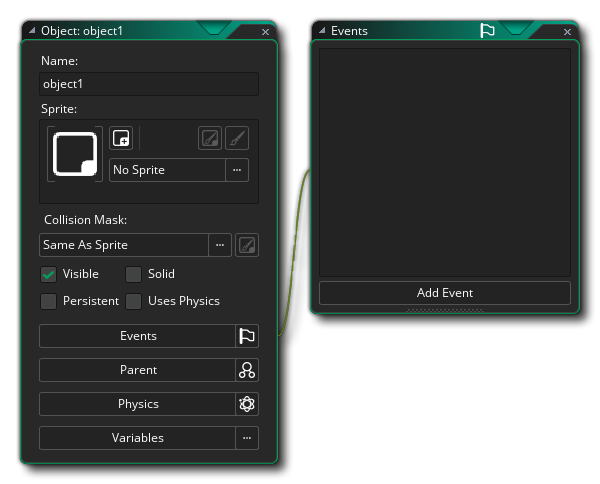
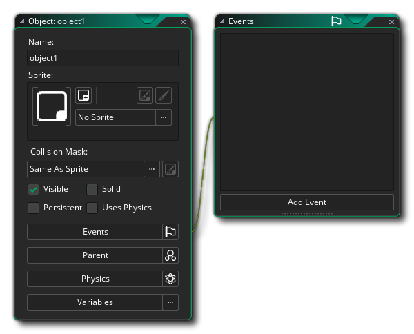

Mit den Ressourcen, die du bisher gesehen hast, kannst du dem Spielressourcebaum einige schöne Bilder und Sounds hinzufügen, aber sie machen noch nichts im Spiel selbst! Dafür brauchen wir die wichtigste Ressource von GameMaker Studio 2, die Objekt- Ressource. Objekte sind eine spezielle Ressource, mit der wir Aspekte eines Spiels steuern und bestimmte Dinge tun können. Meistens ist ihnen ein Sprite zugeordnet, so dass Sie sie in den Spielräumen sehen können, aber manchmal werden sie als "Behind the Scenes" -Controller verwendet, um Dinge zu tun, die mit dem Benutzer, Timing usw. zusammenhängen. Sie können Verhaltensweisen erhalten und sie können sowohl auf bestimmte Ereignisse als auch auf einander reagieren, und die meisten Dinge, die Sie in einem Spiel sehen, basieren auf Objekten und deren Interaktionen.
Um eine neue Objektressource zu erstellen, ist diese wie für jede andere Ressource und Sie klicken einfach mit der rechten Maustaste  Klicken Sie auf den Ressourcenordner Objekte und wählen Sie Erstellen. 
Klicken Sie auf den Ressourcenordner Objekte und wählen Sie Erstellen. 
Dies ist das Objekt-Editor-Fenster und zeigt die aktuellen Eigenschaften an, und das erste, was Sie tun sollten, ist das Objekt zu benennen, wiederum unter Verwendung eines Präfixes wie "obj_" oder eines anderen Identifikators. Im Allgemeinen oder ein Objekt, um etwas zu zeichnen und Kollisionen mit Instanzen anderer Objekte zu registrieren, muss ein Sprite vorhanden sein, das mit Hilfe des  Taste. Dies öffnet den Asset Explorer, in dem Sie das zu verwendende Sprite auswählen können:
Taste. Dies öffnet den Asset Explorer, in dem Sie das zu verwendende Sprite auswählen können: 
Wenn Sie noch kein geeignetes Sprite haben, können Sie auf klicken  auf der Schaltfläche "Neuer Sprite"
auf der Schaltfläche "Neuer Sprite"  Erstellen Sie eine neue Sprite-Ressource, und bearbeiten Sie sie wie gewünscht, so als ob Sie die Ressource über die Standardressourcen-Erstellungsoptionen erstellt hätten. Jetzt wird sie dem Objekt, das Sie beim Erstellen geöffnet haben, automatisch zugewiesen. Sobald Sie eine Ressource ausgewählt haben, können Sie auch klicken
Erstellen Sie eine neue Sprite-Ressource, und bearbeiten Sie sie wie gewünscht, so als ob Sie die Ressource über die Standardressourcen-Erstellungsoptionen erstellt hätten. Jetzt wird sie dem Objekt, das Sie beim Erstellen geöffnet haben, automatisch zugewiesen. Sobald Sie eine Ressource ausgewählt haben, können Sie auch klicken  auf dem Edit Sprite
auf dem Edit Sprite  oder Bild bearbeiten
oder Bild bearbeiten  Schaltflächen, um entweder das Bild selbst oder die Sprite-Ressource zu bearbeiten. Dies kann schneller sein als das erste Auffinden der Ressource in der Ressourcenliste und dann das Angeben, dass Sie sie bearbeiten möchten.
Schaltflächen, um entweder das Bild selbst oder die Sprite-Ressource zu bearbeiten. Dies kann schneller sein als das erste Auffinden der Ressource in der Ressourcenliste und dann das Angeben, dass Sie sie bearbeiten möchten.
Sobald Sie das Sprite ausgewählt haben, können Sie einige andere Eigenschaften ändern, z. B. ob es sichtbar sein soll oder nicht - oder welche Art von Kollisionsmaske es haben soll. Bei einfachen Spielen müssen Sie hier wahrscheinlich nichts ändern und können nun Ereignisse zum Objekt hinzufügen. Grundsätzlich sind Ereignisse diskrete Momente in der Spielschleife, in denen die Dinge basierend auf dem, was Sie für sie programmiert haben, geschehen. GameMaker Studio 2 arbeitet mit Zyklen dieser Ereignisse - von dem Moment, in dem ein Raum gestartet wird, bis zu dem Moment, an dem er beendet wird, läuft eine Spielschleife, in der jeder Schritt (ein Schritt ist ein Moment der Spielzeit, abhängig von der Spielgeschwindigkeit) stattfindet Eine Reihe von Ereignissen wird ausgeführt, und Sie können Code- oder DnD™ -Aktionen in Ihren Instanzen platzieren, die auf diese Ereignisse reagieren.
Um ein Ereignis hinzuzufügen, klicken Sie auf  auf der Schaltfläche Ereignis hinzufügen:
auf der Schaltfläche Ereignis hinzufügen: 
Oben können Sie alle verschiedenen Ereigniskategorien sehen, von denen einige andere Unterkategorien enthalten. Wir werden hier nicht alle Ereignisse durchgehen, aber wir werden kurz die fünf wichtigsten behandeln:
 | Ereignis erstellen | Dieses Ereignis tritt auf, wenn eine Instanz des Objekts zum ersten Mal erstellt wird. Dies ist das allererste Ereignis innerhalb einer Instanz, die über den Raumeditor in einem Raum platziert wurde, wenn ein Raum betreten wird. Dies bedeutet, dass dieses Ereignis der ideale Ort ist, um Variablen zu initialisieren, Timelines zu starten, Pfade zu setzen usw. und alles andere, was normalerweise nur einmal oder nur dann ausgeführt werden muss, wenn eine Instanz zum ersten Mal im Raum erscheint. |
 | Schritt Ereignis | GameMaker Studio 2 teilt die Spielzeit in Stufen auf, wobei die Spielgeschwindigkeit definiert, wie viele dieser Schritte pro Sekunde ausgeführt werden sollen. Ein Schritt, ist im Grunde die Schleife, die ständig mit allen Ereignissen läuft, die während des Spiels geprüft und ausgelöst werden, so wie Sie sich vorstellen können, ist das Schritt-Ereignis ein Ereignis, das während der Instanz auf jeden einzelnen Schritt des Spiels überprüft wird. Beachten Sie, dass die Step-Event-Kategorie drei Unterkategorien zur Feinabstimmung des Timings innerhalb der Instanz enthält. Im Allgemeinen werden Sie jedoch das Main Step-Event am meisten verwenden. |
| Kollisionsereignis | Natürlich ist es sehr wichtig, dass Sie wissen, wann zwei (oder mehr) Instanzen eines Objekts kollidiert sind, und dafür haben wir das Kollisionsereignis. Dies ist ein Ereignis, das Sie in ein Objekt einfügen und dann angeben, für welches andere Objekt Sie nach Kollisionen suchen sollen. Sobald Sie das Ereignis hinzugefügt und das zu überprüfende Objekt ausgewählt haben, können Sie Code oder DnD™ hinzufügen, um die Kollision zu beheben. | |
 | Ereignis zeichnen | Es gibt mehrere verschiedene Draw-Ereignisse in der Kategorie der Zeichenereignisse, aber diejenige, die Sie am häufigsten verwenden, ist diejenige, die oben einfach "Draw" genannt wird. Dieses allgemeine Zeichenereignis wird wie das Schritt-Ereignis für jeden Spielframe verwendet, funktioniert jedoch auf zwei verschiedene Arten. Die erste ist, wenn Sie keinen Code oder DnD™ zum Ereignis hinzufügen, in diesem Fall ist es das Sprite zugeordnet, unter Verwendung beliebiger Transformationen „default ziehen“, die an anderer Stelle im Objekt angewendet wurden (wie die Größe oder Alpha ändern Mischen). Die zweite Möglichkeit ist, wenn Sie Code oder DnD™ hinzufügen. Hinzufügen von etwas zu dem Ereignis sagt GameMaker Studio 2 "Ich möchte steuern, was Sie für Instanzen dieses Objekts zeichnen" und es vollständig überzieht die Standard-Draw. Dies bedeutet, dass Sie ein Objekt mit einem zugewiesenen Sprite zuweisen können. Legen Sie dann das Zeichenereignis fest, um Text zu zeichnen, und das Sprite wird nicht gezeichnet, da Sie GameMaker Studio 2 nicht angewiesen haben, es zu zeichnen. |
| Zerstöre das Ereignis | Dieses Ereignis ist das letzte Ereignis, das ausgeführt wird, wenn eine Instanz zerstört wird. Es wird oft übersehen, wenn man Objekten Verhalten hinzufügt, aber es kann sehr nützlich sein - zum Beispiel, um Explosions- oder Partikeleffekte zu erzeugen, wenn ein Gegner getötet wird, oder um eine neue Instanz des Objekts in einem anderen Teil des Raumes zu erzeugen. oder sogar für das Hinzufügen von Punkten zu einer Partitur. |
Weitere Informationen zu den verschiedenen Veranstaltungen finden Sie hier.
Das Hinzufügen eines Ereignisses öffnet entweder den Code-Editor oder den Drag & Drop-Editor, je nachdem, welche Art von Projekt Sie erstellen. In diesem Fenster können Sie nun den Code oder die Aktionen hinzufügen, die jedes Mal ausgeführt werden sollen, wenn das Ereignis innerhalb der Spielschleife ausgelöst wird. Ein typisches Objekt mit Ereignissen und Code sieht folgendermaßen aus: 
Die Verwendung von DnD™ oder Code zur Programmierung des Spiels liegt außerhalb des Geltungsbereichs dieser grundlegenden Kurzanleitung. Weitere Informationen finden Sie auf den folgenden zwei Seiten:
Und Sie können hier eine vollständige Erklärung aller verschiedenen Teile des Objekteditors finden:
Der nächste Teil dieses Leitfadens befasst sich mit dem Raum-Editor, in dem alles, was Sie bisher gelernt haben, zusammenkommt, um aus Ihren Projekten Spiele zu machen...